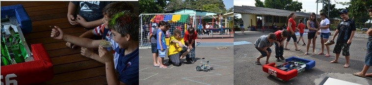

O time Under Control quer que nossa comunidade tenha as mesmas oportunidades educacionais das quais nós tivemos. Assim, fazemos 630 horas de serviço comunitário anualmente. Mensalmente, o time 1156 leva a ciência e a tecnologia, através de robôs de Mindstorm (Kits de lego), VEX e FRC para minorias.
Uma vez por semana, levamos nossos kits de educação tecnológica à Ala Pediátrica do Hospital Regina e apresentamos para as crianças o que a FIRST nos ensinou. O diretor da Ala Pediatrica do hospital disse: “Os estudantes do time Under Control acrescentam muito as vidas e a educação dessas crianças. Todas têm momentos de distração e diversão, algo que contribui muito para a sua recuperação. Sem o Under Control, elas não conheceriam a robótica e todo o conhecimento que vem junto dela.” Desde que começamos nosso trabalho social no hospital, nós inspiramos a instituição a criar seu próprio programa de voluntários, no qual nos voluntariamos como “atores”.
Mensalmente, levamos a robótica aos jovens da APAE, uma escola para crianças intelectualmente desafiadas, e ao instituto de Câncer Infantil. Nós testemunhamos seu crescimento e suas descobertas pessoais, aprendendo progressivamente e conhecendo as peças e os pequenos robôs, tendo ideais inovadoras na área de engenharia que nos ensinam tanto quanto nós os ensinamos.
Quando vamos a estas instituições, nós percebemos a alegria das crianças nos seus sorrisos. Em 2013 fizemos um projeto totalmente novo, o qual levamos a todas as atividades sociais que realizamos. Esse projeto espalha a FIRST e seus jogos: cada criança joga um jogo no qual ele/ela deve relacionar peças com imagens de robôs aos objetivos de jogos de FRC dos últimos 12 anos. Após isso, eles constroem um robô de lego que deve superar um desafio, inspirado no FRC. Nosso jogo, “Find&Match" é um diferencial na educação dessas crianças.